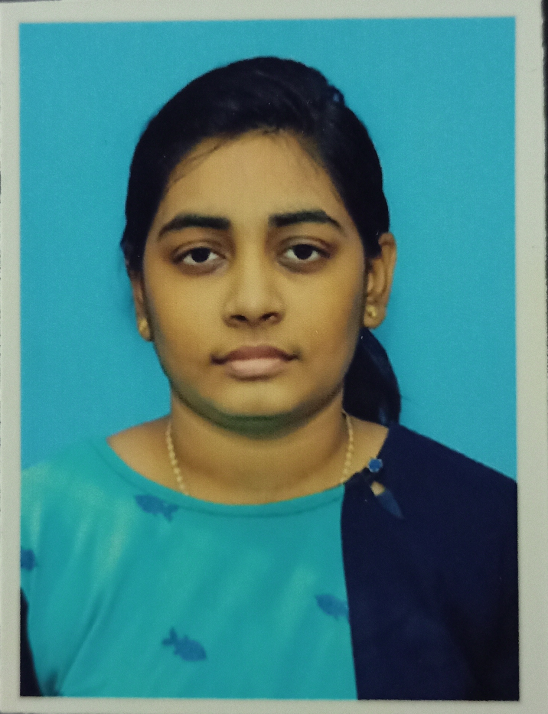

Objective:
Graduate with 1.5 years of experience working as a process executive.
Education:
- BCA- Dr.Mgr.janaki college of arts &
science for women
2021 -74.7
- H.S.L.C- St.Raphaels girls’ hr.sec
School
2018 -52.3
- S.S.L.C
St.Raphaels girls’ hr.sec
School
2016 -64.2
Work Expirence:
- Process Executive:
Infosearch Bpo Services - 2022(Sept) to 2024(Jan)
The task involves working on image annotation, which entails labeling digital images.
Annotation can be done in various forms such as bounding box, polygon, segmentation, and Lider.
Technical Skills:
- Proficient in HTML, CSS, and JavaScript with practical experience in web development.
- Familiarity with Linux, AWS, and DevOps, showcasing a solid understanding of cloud computing and infrastructure management.
- Possessing a foundational understanding of MS Office, providing the ability to efficiently utilize essential productivity tools.
Certification:
Certification course in aws, devops.
Contact me
© Jennifer N. All rights reserved.